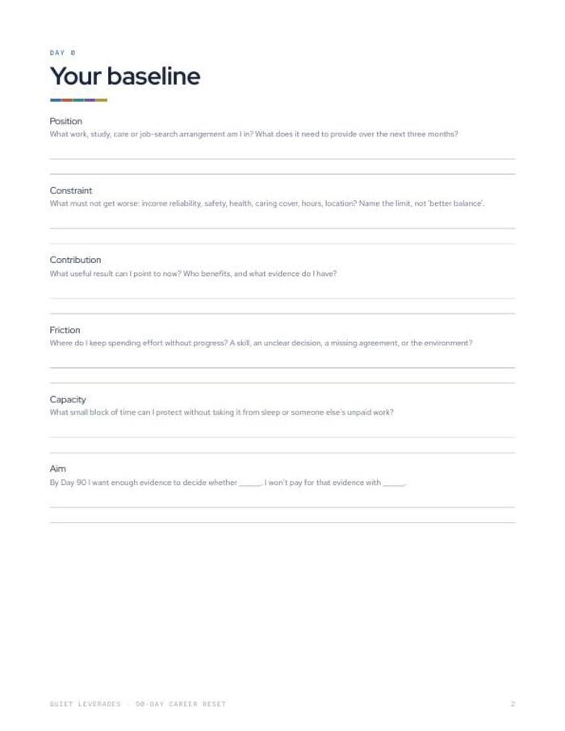
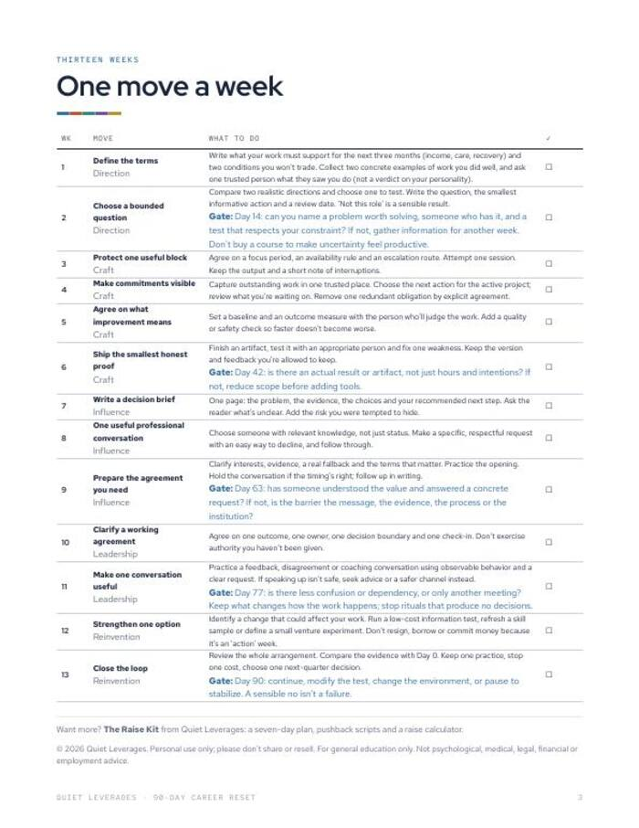

Staying in a job you have outgrown is a decision. Make it for ninety days, with a plan.
Thirteen weeks, one career move a week, with five honest decision gates along the way.
Printable PDF. 3 pages. Print it or fill it in on a tablet. Instant download.

A Day 0 baseline
Twenty minutes to write down where you stand before you change anything.
One move a week
Thirteen small moves across direction, craft, influence, leadership and reinvention.
Five decision gates
Set points to continue, change or stop, so the plan does not drift.
weekly moves
decision gates
areas: direction, craft, influence, leadership, reinvention
of workers say they stay in their job out of fear and economic uncertainty. A ninety-day plan turns staying into a choice you test.
Monster, Oct 2025What changes after you fill it in
A baseline on paper
Position, constraint, contribution, friction, capacity and aim, in your own words.
Small weekly moves
One move a week, in order, so the plan fits around a full-time job.
Honest checkpoints
Gates at set days make you answer whether it is working before you carry on.
A direction worth testing
By the end you have evidence for a decision, not a feeling.
Everything in the download
- Day 0 baseline. Position, constraint, contribution, friction, capacity, aim.
- 13 weekly moves. Across direction, craft, influence, leadership and reinvention.
- Five decision gates. Check-in points to continue, change or stop.
- Printable PDF. 3 pages, US Letter, prints on A4 at fit to page.


Day 0, then one move a week
Do Day 0
Twenty minutes to write your baseline.
Make one move a week
Take the moves in order. Check it off and write one line.
Stop at the gates
At each gate, answer honestly: continue, change or stop.
A good fit if you want options without a leap
Use this if
- You have outgrown your role but are not ready to quit.
- You want one small move a week, not a big overhaul.
- You like decisions based on evidence.
Skip it if
- You need to decide right now whether to leave. The Stay-or-Go Worksheet is free.
- You want the full workbook with scripts and a tracker sheet. The Career Kit launches Jan 18.
- You want a recruiter or job board. This is a planning tool.
Why a plan helps
of workers say they stay in their job out of fear and economic uncertainty.
Monster, Oct 2025call themselves job huggers.
ResumeBuilder, Feb 2026median from starting a job search to a first offer.
Huntr, Q1 2026What readers say about 90-Day Career Reset
Plan the next thirteen weeks
A baseline, thirteen moves and five gates, in three printed pages.
- Day 0 baseline
- 13 weekly moves
- Five decision gates
Before you decide
How much time does it need?
Day 0 takes about twenty minutes. After that it is one move a week, checked off and written up in a line.
Who is it for?
People who have outgrown a role and want to test a direction without quitting.
Do I need to quit to use it?
No. It is built to run alongside your current job.
What are the decision gates?
Set points in the plan where you answer honestly whether to continue, change or stop. There are five.
Can I print it or use it on a tablet?
Yes. It is a PDF, so any PDF app works. It prints on US Letter or on A4 at fit to page.
Is this employment or legal advice?
No. General education, not employment or legal advice.
The next step after this one

The Raise Kit
Seven days of preparation, one four-line ask, and what to say to every pushback.

The Career Kit
Thirteen weeks, one move a week. A career that funds your life instead of draining it.

The Stay-or-Go Worksheet
Should I quit my job? Decide on paper, not at 2 a.m.